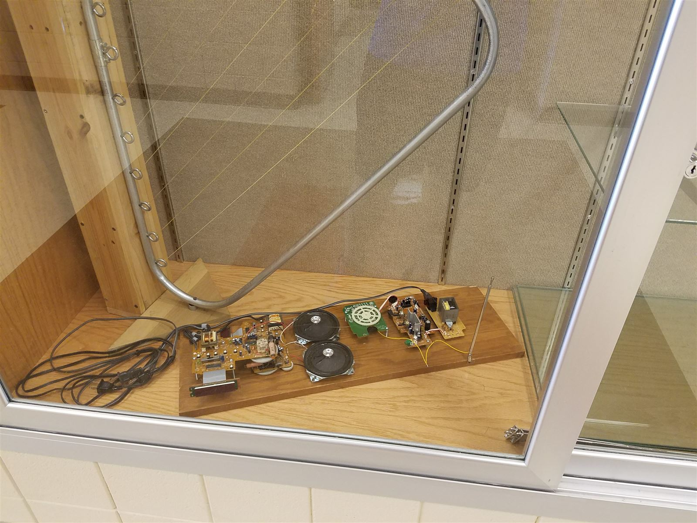

Scratch-Built Theremin
An instrument played without touching it. This one is built from salvaged radio electronics, speakers, and a telescoping antenna mounted on a wooden plank, and it plays.

01 / 02 · THE BUILD
The Build
Salvaged radio electronics, two speakers, and a telescoping antenna mounted on a plank. It was displayed in the school display case.
02 / 02 · PERFORMANCE
Playing It (Sound On)
Pitch changes with hand distance from the antenna. Turn the sound on for this one.